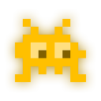
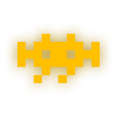

12:47


3
Chasseihelp
Ma position
2 invaders sélectionnés
Place de la République, Paris
Démarrer
+15 min
Vue d'ensemble✕
Ouvrir le panneau
Appuie sur le bouton drapeau en bas a gauche de la carte pour ouvrir le panneau de routage.
1HUNTi
2Origin
3Invader stops
4Destination
5LoopUncaptured+15 min
② Depart
Ton point de depart - recherche une adresse, choisis sur la carte ou utilise ta position.
③ Arrets obligatoires
Les invaders a inclure quoi qu'il arrive. Appuie dessus sur la carte quand le panneau est ouvert.
④ Arrivee
Ton point d'arrivee. Masque en mode boucle.
⑤ Options & calcul
Deplie pour regler le detour, les filtres et le mode boucle. Appuie sur Demarrer pour calculer.
Compris